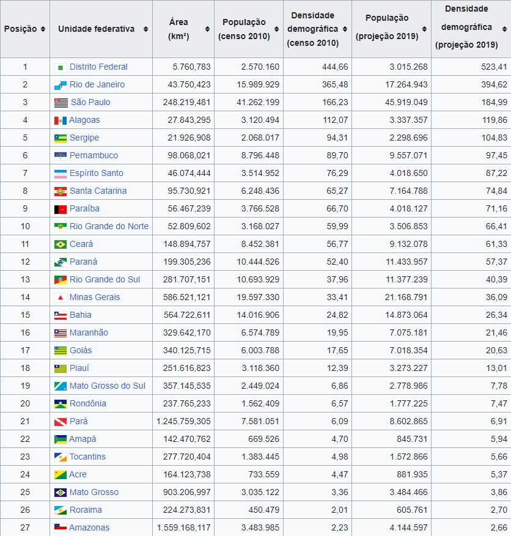

Criando tabelas em HTML
Tabelas podem ser importante para demostrar comparações de dados, como por exemplo a tabela a seguir:
Criando uma tabela simples
Para criarmos uma tabela simples em html utilizamos o comando é recomendado criar uma tag table, apos isso criamos as linhas com a tag tr, nela criamos as células com a tag td!
Oque deixaria o código assim:
<table>
<tr>
<td>A1</td>
<td>B1</td>
<td>c1</td>
</tr>
<tr>
<td>A2</td>
<td>B2</td>
<td>c2</td>
</tr>
<tr>
<td>A3</td>
<td>B3</td>
<td>c3</td>
</tr>
</table>
Oque resultaria nisso:
| A1 | B1 | c1 |
| A2 | B2 | c2 |
| A3 | B3 | c3 |
Porém, para deixarmos isso com cara de tabela vamos precisar utilizar estilos CSS3!
| A1 | B1 | c1 |
| A2 | B2 | c2 |
| A3 | B3 | c3 |
Criando uma tabela grande
Para criarmos tabelas mais complexas precisaremos ultilizar tags semelhantes a aquelas utilizadas no body, como <header>, <main> e <footer>, porém para tabelas estas segues são: <thead>, <tbody> e <tfoot>!
Observe a seguir como sería escrito o código:
<table>
<thead>
<tr>
<td>A</td>
<td>B</td>
<td>c</td>
</tr>
</thead>
<tbody>
<tr>
<td>A1</td>
<td>B1</td>
<td>c1</td>
</tr>
<tr>
<td>A2</td>
<td>B2</td>
<td>c2</td>
</tr>
<tr>
<td>A3</td>
<td>B3</td>
<td>c3</td>
</tr>
</tbody>
<tfoot>
</tfoot>
</table>
Que resultaria na tabela a seguir:
| A | B | C |
| A1 | B1 | C1 |
| A2 | B2 | C2 |
| A3 | B3 | C3 |
Apesar de aparentar ser igual às tabelas anteriores, a maneira a qual ela foi construida é ideal para desenvolver tabelas que possam ser mais complexas, alem de dar diferentes possibilidades de estilos. Por isso é indicado construir tabelas utilizando o último método.
Existe também a tag <caption> que seria o título da nossa tabela, como no exemplo a seguir:
| A | B | C |
| A1 | B1 | C1 |
| A2 | B2 | C2 |
| A3 | B3 | C3 |
Nas tabelas nos tambem possuimos a tag <scope> que serve de escopo para os nossos dados.
Existem 2 tipos basicos de <scope>, sendo eles;
<scope="col">
<scope="row">
Eles tem a função de indicar a quem está se referindo o <th>, que seria o titulo das colunas e ou linhas.
<scope="col"> serve para indicar que esse <th> é o título de uma coluna.
<scope="row"> serve para indicar que esse <th> é o título de uma linha.